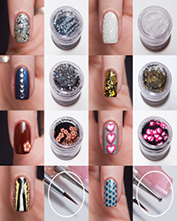

Nail art

Use an emery board rather than a file to shape nails, file along the same direction.
Moisturize the nails along with the hands with a good moisturizing lotion as the Vitamin E and collagen is good for nails.
Try not to use a nail polish remover very often as the chemicals and alcohol can make the nails brittle.
Use a pair of gloves while gardening, or handling harsh detergents and cleaning agents.
Always trim the toe nails in a straight line as cutting them in deep curves can result in split nails in the corners and ingrown nails and at times infected toes.
For pretty nails we can dip the nails and toes in warm olive oil for 15-20 minutes 3 -4 times a week. The nails take on a healthy hue and are less brittle.
Dipping the nails in a cup of warm water to which a spoonful of fresh lemon juice is added, brightens the nails and removes stains. A cotton ball dipped in lemon juice can be scrubbed on the nails and then gently washed with warm water.
For strong and pretty nails, dip them in warm mustard oil for 15-20 minutes; gently massage the nail area and fingers as this improves blood circulation.